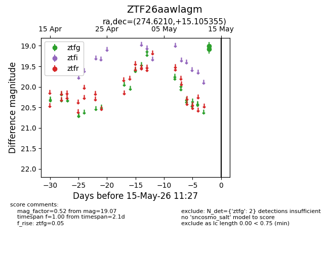
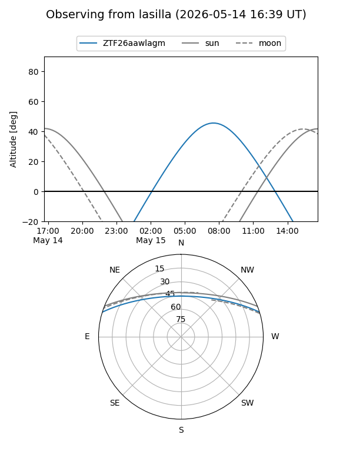
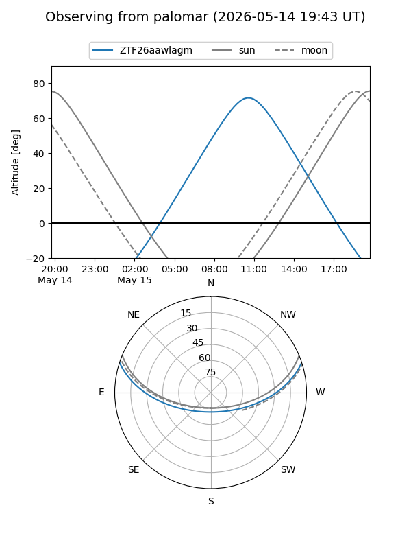

ZTF26aawlagm
Target ZTF26aawlagm at 2026-05-15 11:29
Aliases and brokers:
FINK: link
Lasair: link
ALeRCE: link
alt names
ZTF26aawlagm (ztf,fink_ztf)
Coordinates:
equatorial (ra, dec) = 274.6210,+15.10535
equatorial (HMS+DMS) = 18:18:29.03,+15:06:19.28
galactic (l, b) = (42.9532,+14.00171)
Flags:
Photometry:
last ztfg=19.07
2 ztfg detections
Lightcurve

Visibility


Additional plots